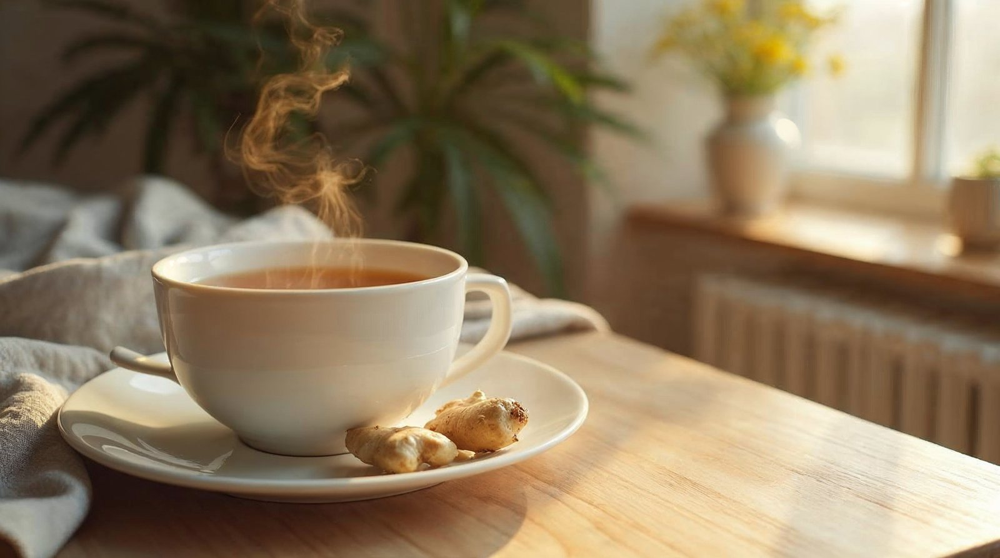
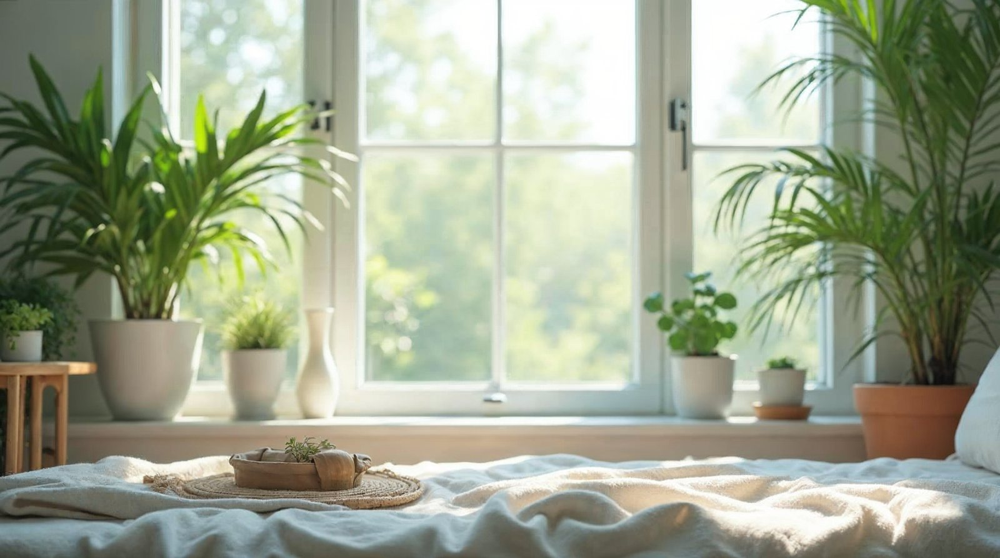
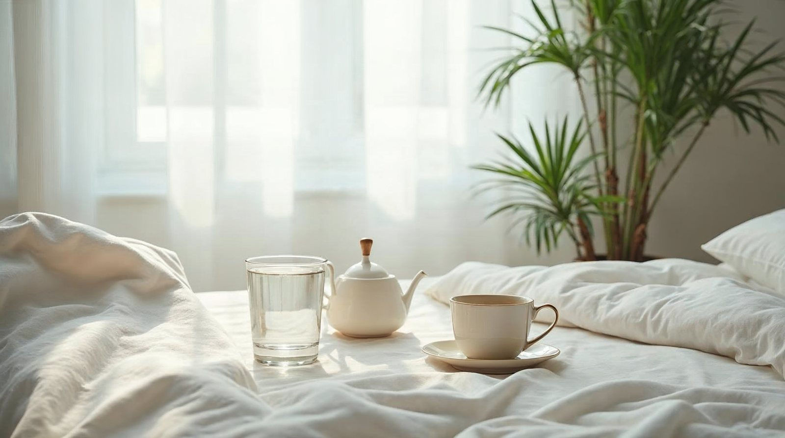
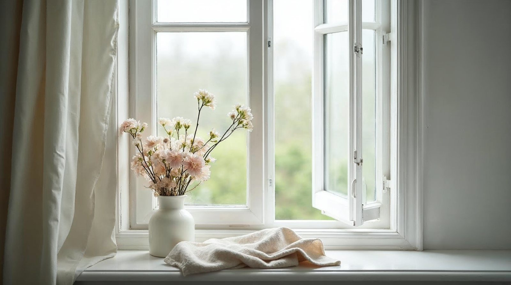
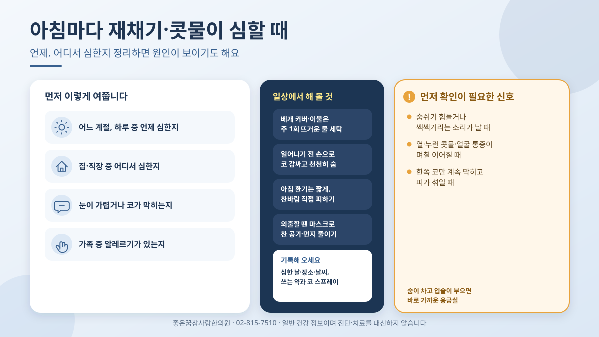

이종호 한의사 감수좋은꿈참사랑한의원 대표원장 (한의사 면허번호 19769)발행 2026-11-26 · 수정 2026-11-26
이 글의 차례
알람을 끄고 이불 밖으로 발을 내딛는 순간 재채기가 연달아 터집니다. 세수하다 다섯 번, 아이 가방을 챙기다 또 세 번. 집을 나설 즈음이면 코밑은 따갑게 헐고, 휴지통은 벌써 반쯤 차 있지요.
아침마다 재채기와 맑은 콧물이 몰린다면, 알레르기 비염 경향이 있는 코가 아침의 변화에 예민하게 반응하는 경우가 많습니다. 따뜻한 이불 속에서 찬 공기로 나오는 온도 차, 밤새 난방으로 마른 방, 짧았던 잠 같은 것들입니다.
그래서 저는 코를 살피면서 몸이 찬 편인지, 잠과 소화는 어떤지를 함께 여쭙니다.
진료실에서는 아침 한때만 그러니 참을 만하다는 말씀을 자주 듣습니다. 그런데 이야기를 듣다 보면 그 한때가 하루의 시작을 통째로 흔들고 있는 경우가 많습니다. 코를 푸느라 정신없이 집을 나서고, 오전 내내 머리가 멍하다고 하시지요.
왜 아침에 유독 코가 먼저 깨어날까요
『내경』은 하루 중 몸이 가장 고요한 이른 아침을 진맥하기 가장 좋은 때로 보았습니다. 그런데 비염 경향이 있는 분들에게 이른 아침은 하루 중 코가 가장 시끄러운 시간이기도 합니다. 왜 하필 그때일까요?
알레르기 비염 경향이 있는 코는 집먼지진드기, 꽃가루, 반려동물 털 같은 것을 실제보다 큰 위협으로 받아들입니다. 재채기로 밀어내고, 맑은 콧물로 씻어 내고, 점막을 부풀려 막아 보려 하지요. 코와 눈, 입천장이 함께 가려운 것도 그 반응의 한 모습입니다.
이런 코에게 아침은 자극이 한꺼번에 몰리는 시간입니다. 밤새 얼굴을 묻고 있던 베개와 이불, 난방으로 바짝 마른 방 공기, 이불 밖으로 나오는 순간의 찬 공기를 짧은 사이에 연달아 만나게 되니까요.
알레르기 검사에서 뚜렷한 원인이 나오지 않는데도 찬 공기나 갑작스러운 온도 차에 코가 먼저 반응하는 분도 있습니다. 따뜻한 방에서 찬 욕실로 들어설 때, 현관문을 열고 영하의 바깥으로 나설 때 재채기가 터진다면 온도 차도 하나의 계기로 봅니다.
계절에 따라 앞에 서는 계기도 바뀝니다. 봄에는 꽃가루와 황사, 여름에는 냉방으로 차가워진 실내와 바깥의 온도 차, 가을에는 커지는 아침저녁 기온 차, 겨울에는 난방으로 마른 공기가 먼저 떠오르지요. 지난해 같은 계절에 어땠는지 기억해 두시면 상담에 참고가 됩니다.
여기에 몸 상태가 더해집니다. 잠이 짧았던 주, 피곤이 쌓인 날 코가 더 예민해진다는 말씀을 진료실에서 자주 듣습니다. 손발과 배가 늘 찬 분들은 찬 공기에 유난히 약하다고 하시고요.
한의학에서는 맑고 묽은 콧물이 잦은 것을 몸의 온기, 몸속 수분이 도는 흐름과 함께 살펴 왔습니다. 그래서 저는 코 이야기를 듣다가도 손발과 배가 찬지, 찬 음료를 즐기시는지 여쭙습니다.
소화도 빼놓지 않습니다. 늦은 야식을 먹고 바로 누운 다음 날, 찬 음료를 많이 마신 다음 날 아침이 더 힘들었다는 분들이 있어서입니다. 모든 분이 그렇지는 않으니, 정말 그런지는 기록으로 확인해 봅니다.
저는 체온, 소화, 잠, 배설을 몸이 보내는 네 가지 신호로 여기고 어떤 일로 오셨든 함께 살핍니다. 코의 예민함도 이 리듬이 흔들릴 때 더 크게 드러나는 경우가 많아, 코만 따로 떼어 보지 않으려 합니다.

감기 콧물과는 어떻게 다를까요
아침 재채기가 며칠 이어지면 감기인지 비염인지부터 헷갈리실 겁니다. 정확한 구분은 진찰로 하지만, 집에서 가늠해 볼 수 있는 차이는 있습니다.
감기는 대개 목이 아프거나 몸살, 열이 함께 오고 콧물이 맑다가 점점 진해집니다. 일주일에서 열흘 사이에 가라앉는 경우가 많지요. 알레르기 비염 경향은 열 없이 같은 시간, 같은 장소에서 되풀이되고, 가려움과 연달아 나오는 재채기가 두드러집니다.
눈여겨볼 것은 세 번째 경우입니다. 누런 콧물과 함께 광대뼈나 이마, 눈 주위가 묵직하게 아픈 증상이 열흘 넘게 이어지거나, 나아지는 듯하다 다시 열이 나고 심해진다면 코 옆 빈 공간(부비동)에 염증이 생긴 것일 수 있습니다. 이때는 이비인후과 진료가 먼저입니다.

예를 들면 이런 경우입니다
어느 한 분이 아니라, 아침 코 때문에 오시는 분들께 자주 듣는 장면을 몇 가지 모아 보았습니다.
예를 들어 난방을 세게 틀어 둔 원룸에서 자고, 일어나 찬 욕실에 들어서는 순간 재채기가 시작되는 경우가 있습니다. 이런 분께는 방과 욕실의 온도 차, 밤사이 방의 습도, 잠든 시각을 함께 적어 보시라고 권합니다.
예를 들어 퇴근이 늦어 밤 10시가 넘어 저녁을 먹고 바로 눕는 날이 잦은 분이, 그다음 날 아침에 코가 유독 시끄럽다고 하실 때가 있습니다. 이럴 때는 코 증상 옆에 저녁 먹은 시각과 아침 속 상태를 나란히 적어 봅니다.
예를 들어 손발이 늘 차고 찬 음료를 즐기는 분이 환절기 아침마다 맑은 콧물이 줄줄 흐른다고 하시는 경우도 있습니다. 이때는 몸의 온기와 실내 온도, 아침에 처음 마시는 물의 온도부터 함께 살핍니다.
스스로 점검해 보세요
아래 가운데 몇 가지에 해당하는지 세어 보세요. 진단을 위한 표가 아니라, 진료 때 이야기를 좁혀 가는 출발점입니다.
- 일어나서 30분 안에 재채기가 몰려 나오고, 낮에는 한결 덜하다
- 콧물이 물처럼 맑고, 코나 눈, 입천장이 함께 가렵다
- 따뜻한 방에서 찬 곳으로 옮길 때 재채기가 터진다
- 잠이 짧았던 날이나 피곤한 주에 더 심하다
- 손발이나 배가 찬 편이고, 찬 음료를 마시면 속이 불편하다
- 코가 막혀 입을 벌리고 자서 아침에 목이 마른다
- 해마다 비슷한 계절에 시작된다
여러 항목에 해당한다면 아래 기록과 함께 진료 때 말씀해 주세요. 입을 벌리고 자는 날이 많다면 자고 일어나면 입이 바짝 마르고 목이 칼칼할 때는 어떻게 살피나요? 글도 함께 보세요.

먼저 이렇게 여쭙니다
처음 오시면 코 이야기부터 듣지만, 질문은 금세 코 바깥으로 넘어갑니다. 왜 그런 것까지 묻느냐고 의아해하시는 분도 계십니다. 몸은 따로따로 움직이지 않기 때문입니다.
- 언제부터, 어느 계절에, 하루 중 언제 가장 심한가요?
- 집과 일터 가운데 어디서 심하고, 주말에 다른 곳에서 자면 어떤가요?
- 재채기와 콧물 말고 코막힘, 눈 가려움, 숨찬 느낌이 있나요?
- 잠은 몇 시에 들어 몇 시에 깨고, 중간에 깨시나요?
- 손발이나 배가 찬 편인가요? 식사 뒤 속은 편한가요?
- 드시는 알레르기약이나 쓰시는 코 스프레이가 있나요? 얼마나 쓰셨나요?
가족 가운데 비염이나 천식, 아토피가 있는 분이 있는지도 여쭙습니다. 알레르기 경향은 가족 안에서 함께 보이는 경우가 많아서입니다.
코가 막힌 건지 콧물이 목으로 넘어가는 건지 말로 옮기기 어렵다면 코가 막힌 것인지 콧물이 목으로 넘어가는 것인지 어떻게 구분해 말하나요? 글을 참고해 주세요.
일상에서 먼저 해 볼 수 있는 것
침구와 먼지 관리는 아침에 일어나자마자 재채기와 맑은 콧물이 쏟아질 때는 어떻게 살피나요? 글에 따로 정리해 두었습니다. 여기서는 몸과 아침 순서를 바꾸는 방법을 적어 보겠습니다.
- 일어나기 전 이불 속에서 1~2분 손발을 꼼지락거리며 몸부터 깨우기
- 머리맡에 카디건과 양말을 두고, 이불 밖으로 나오자마자 걸치기
- 욕실과 거실을 미리 데워 침실과의 온도 차를 줄이고, 밤 침실 습도는 40~60%로
- 아침 첫 물은 찬물 대신 미지근한 물로 천천히
- 저녁은 잠들기 3시간 전쯤 가볍게 마치고, 일어나는 시각은 주말에도 비슷하게
잠들기 1~2시간 전 따뜻한 물에 몸을 담그는 것도 권합니다. 하루의 긴장을 내려놓는 신호가 되고, 몸이 하루의 흐름을 기억하는 데 도움이 될 수 있습니다. 어지러우면 바로 나와 쉬세요.
코는 한쪽씩 살살 푸세요. 양쪽을 한꺼번에 세게 풀면 귀가 먹먹해지기 쉽고, 자꾸 비비고 문지르면 코 안팎이 헐어 더 예민해질 수 있습니다. 코밑이 헐었다면 순한 보습제를 얇게 발라 두셔도 됩니다.
외출할 때는 마스크나 목도리로 코와 입을 가려 찬 공기를 한 번 데워 마시게 해 주세요. 눈 오는 출근길이라면 현관문을 열기 직전에 쓰는 것이 요령입니다.
드시는 약과 코 스프레이는 그대로 알려 주세요
이미 이비인후과에서 알레르기 비염 진단을 받고 약을 드시는 분도 많습니다. 항히스타민제든 처방받은 스프레이든, 한의원에 오신다고 끊으실 필요는 없습니다. 드시는 약은 처방한 의사와 상의 없이 줄이거나 끊지 않습니다.
코 스프레이는 종류마다 쓰는 법이 다릅니다. 처방에 따라 꾸준히 쓰는 것이 있는가 하면, 막힌 코를 빨리 뚫어 주는 종류 가운데에는 며칠 넘게 이어 쓰면 오히려 코가 더 막히는 경우가 있다고 알려져 있습니다.
어느 쪽인지 모르겠다면 처방한 의사나 약사에게 쓰는 기간을 확인해 주세요. 약을 먹으면 낮에 졸리다는 분도 계신데, 이때도 스스로 양을 줄이기보다 처방한 곳에 그대로 말씀하시는 편이 안전합니다.

한의원에서 함께 살필 수 있는 경우
- 이비인후과 진료를 받았거나 약을 쓰고 있는데도 아침 재채기와 콧물이 몇 주째 하루를 흔드는 경우
- 손발과 배가 차고, 찬 공기나 온도 차에 코가 먼저 반응하는 경우
- 코 때문에 잠이 얕아지고 낮 피로와 소화 불편이 함께 있는 경우
좋은꿈참사랑한의원에서는 증상이 심한 때와 장소, 드시는 약을 먼저 충분히 듣습니다. 원인 물질 확인이나 코 안 진찰이 먼저 필요해 보이면 이비인후과를 먼저 안내합니다. 먼저 확인할 것을 확인한 뒤 함께 살필 부분을 정하는 것이 환자분께 안전하기 때문입니다.
제가 진료의 기본으로 삼는 말이 있습니다. "모든 치료의 시작과 끝에 진맥이 있어야 한다." 그래서 처음 오신 분이든 다시 오신 분이든, 코 때문에 오셨어도 모든 분께 맥을 짚습니다.
이야기를 들은 뒤에는 양손을 내어 달라고 합니다. 손목 세 자리를 가볍게, 조금 깊이, 깊이 눌러 보며 양쪽을 비교하고, 그동안 잠과 소화, 손발이 찬지를 여쭙습니다. 필요하다고 판단되면 혀를 보고, 적어 오신 기록을 함께 펼쳐 증상이 심한 날의 공통점을 찾습니다.
그다음 침이나 한약 상담 가운데 지금 맞는 방법을 함께 정하고, 귀가 전에는 집에서 바꿔 볼 아침 순서 한두 가지를 정해 드립니다. 다시 오시면 해 보니 어땠는지, 지키기 어려웠던 사정은 없었는지부터 여쭙고 다음 순서를 다시 정합니다.
이렇게 기록해 오시면 상담이 쉬워집니다
아침 재채기는 진료실에 오실 즈음이면 대개 잠잠해져 있습니다. 그래서 적어 오신 기록이 아침의 코를 대신 보여 줍니다. 하루 한 줄이면 충분합니다.
- 재채기가 몰린 시각과 대략의 횟수, 그때 있던 곳(침실, 욕실, 현관 밖)
- 그날 아침 방 온도와 습도, 바깥 기온
- 전날 잠든 시각과 일어난 시각, 저녁 먹은 시각
- 손발이 찼는지, 아침 속은 편했는지
- 드시는 약과 스프레이 이름, 알레르기 검사 결과지가 있다면 함께
예를 들면 '7시 10분, 욕실 들어가며 재채기 8번, 방 23도·습도 30%, 바깥 영하 2도, 어젯밤 1시 취침, 저녁 10시 반' 정도면 됩니다. 일주일쯤 모이면 심한 날의 모양이 보이는 경우가 많습니다.
이런 증상은 먼저 확인이 필요합니다
- 숨쉬기 힘들거나 숨 쉴 때 쌕쌕거리는 소리가 나는 경우
- 입술이나 눈두덩, 얼굴이 붓거나 목이 조이는 느낌이 드는 경우
이런 신호가 있으면 한의원보다 가까운 병원이나 응급실을 먼저 찾으세요.
마치며
매일 아침 휴지와 씨름하며 하루를 여는 일이 얼마나 사람을 지치게 하는지 압니다. 코의 예민함을 한 번에 없애 드린다고 말씀드리기는 어렵습니다. 그래도 아침이 조금 덜 고단하도록 몸과 하루의 순서를 함께 고쳐 볼 수는 있습니다.
저는 치료를 이렇게 말씀드리곤 합니다. "치료는 찌개를 끓일 때 찌꺼기를 걷어내듯, 몸과 마음에 올라오는 괴로움을 하나하나 걷어내는 일입니다." 아침 코의 불편도 잠과 온도, 식사 가운데 걷어 낼 수 있는 것부터 하나씩 함께 걷어 보시지요.
다음에 오시면 재채기가 가장 심했던 아침, 그 전날 밤을 어떻게 보내셨는지부터 여쭙겠습니다.

여쭙는 것
- 언제부터, 어느 계절에, 하루 중 언제 가장 심한가요?
- 집과 일터 가운데 어디서 심하고, 주말에 다른 곳에서 자면 어떤가요?
- 재채기와 콧물 말고 코막힘, 눈 가려움, 숨찬 느낌이 있나요?
생활에서 해 볼 것
- 일어나기 전 이불 속에서 1~2분 손발을 꼼지락거리며 몸부터 깨우기
- 머리맡에 카디건과 양말을 두고, 이불 밖으로 나오자마자 걸치기
- 욕실과 거실을 미리 데워 침실과의 온도 차를 줄이고, 밤 침실 습도는 40~60%로
한의원에서 함께 살필 것
- 이비인후과 진료를 받았거나 약을 쓰고 있는데도 아침 재채기와 콧물이 몇 주째 하루를…
- 손발과 배가 차고, 찬 공기나 온도 차에 코가 먼저 반응하는 경우
- 코 때문에 잠이 얕아지고 낮 피로와 소화 불편이 함께 있는 경우
먼저 확인이 필요한 신호
- 숨쉬기 힘들거나 숨 쉴 때 쌕쌕거리는 소리가 나는 경우
- 입술이나 눈두덩, 얼굴이 붓거나 목이 조이는 느낌이 드는 경우
한눈에 보는 표
| 구분 | 핵심 |
|---|---|
| 여쭙는 것 | 언제부터, 어느 계절에, 하루 중 언제 가장 심한가요? 집과 일터 가운데 어디서 심하고, 주말에 다른 곳에서 자면 어떤가요? |
| 생활에서 해 볼 것 | 일어나기 전 이불 속에서 1~2분 손발을 꼼지락거리며 몸부터 깨우기 머리맡에 카디건과 양말을 두고, 이불 밖으로 나오자마자 걸치기 |
| 한의원에서 함께 살필 것 | 이비인후과 진료를 받았거나 약을 쓰고 있는데도 아침 재채기와 콧물이 몇 주째 하루를 흔드는 경우 손발과 배가 차고, 찬 공기나 온도 차에 코가 먼저 반응하는 경우 |
| 먼저 확인이 필요한 신호 | 숨쉬기 힘들거나 숨 쉴 때 쌕쌕거리는 소리가 나는 경우 입술이나 눈두덩, 얼굴이 붓거나 목이 조이는 느낌이 드는 경우 |
자주 묻는 질문
알레르기 비염 약을 먹고 있어도 한의원 진료를 받을 수 있나요?
네. 드시는 약과 스프레이 이름을 알려 주시면 확인한 뒤 상담합니다. 약은 처방한 의사와 상의 없이 줄이거나 끊지 않습니다.
몸이 찬 편이면 따뜻하게만 하면 되나요?
차갑게 느끼는 이유가 사람마다 다릅니다. 갑상선이나 빈혈 같은 다른 원인도 함께 고려해 방향을 정합니다.
생리식염수로 코 세척을 해도 되나요?
부드럽게 하는 분들이 많습니다. 귀가 먹먹해지거나 코피가 나면 멈추고 진료 때 상의해 주세요.
출근 전이나 주말에도 진료하나요?
평일은 09:30~20:00(점심 13:00~14:00), 토·일·공휴일은 09:30~15:00(점심시간 없음)에 진료합니다. 방문 전 전화(02-815-7510)로 확인해 주세요.
좋은꿈참사랑한의원은 재진 때 지난번 이야기부터 이어서 여쭙니다. 진료시간과 예약은 오시는 길에서 확인하세요.
어디서 상담받을 수 있나요?
좋은꿈참사랑한의원은 서울 동작구 만양로2길 2 신성빌딩 3층·5층(서울 동작구 상도동, 7호선 상도역 3번 출구 근처)에 있습니다. 한의사 3명(이종호 대표원장, 조영기 수석진료원장, 정원영 진료원장)이 진료합니다. 진료시간은 평일 09:30~20:00(점심 13:00~14:00), 토·일·공휴일 09:30~15:00이며, 방문 전 전화로 확인을 권합니다. 예약은 네이버 예약, 카카오톡 상담, 전화 02-815-7510로 받습니다.
이 글은 일반적인 건강 정보이며 개인의 진단이나 치료를 대신하지 않습니다. 증상이 있거나 복용 중인 약이 있다면 진료를 통해 확인하세요. 치료 효과는 개인마다 다를 수 있습니다.
작성 기준: 일반적으로 알려져 있는 건강 정보를 참고해 정리했습니다(대표원장 감수). 증상 기록은 1~2주 동안 하루 1회, 비슷한 시간에 적어 오시면 지난 상태와 비교하기 쉽습니다.